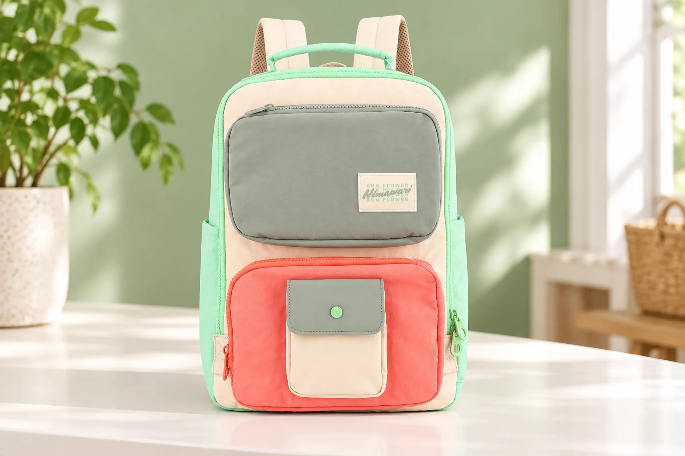
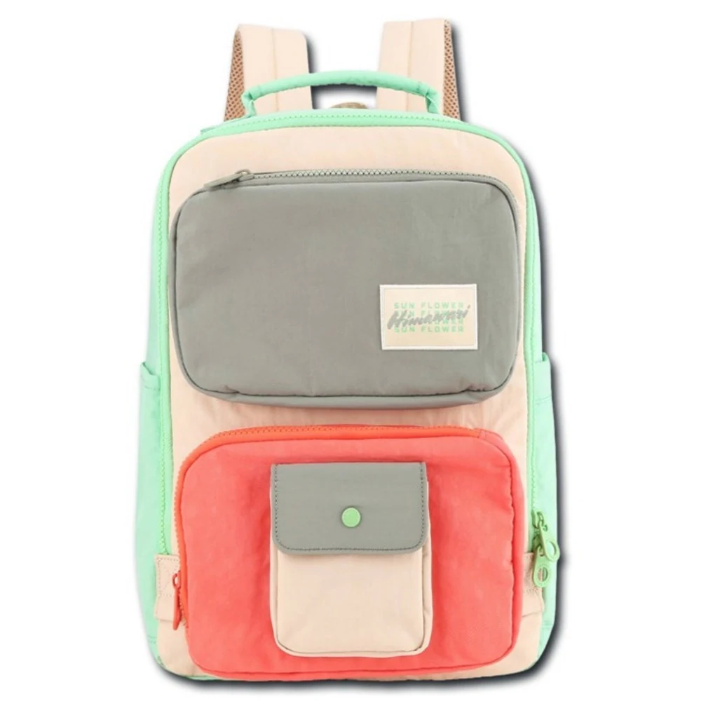
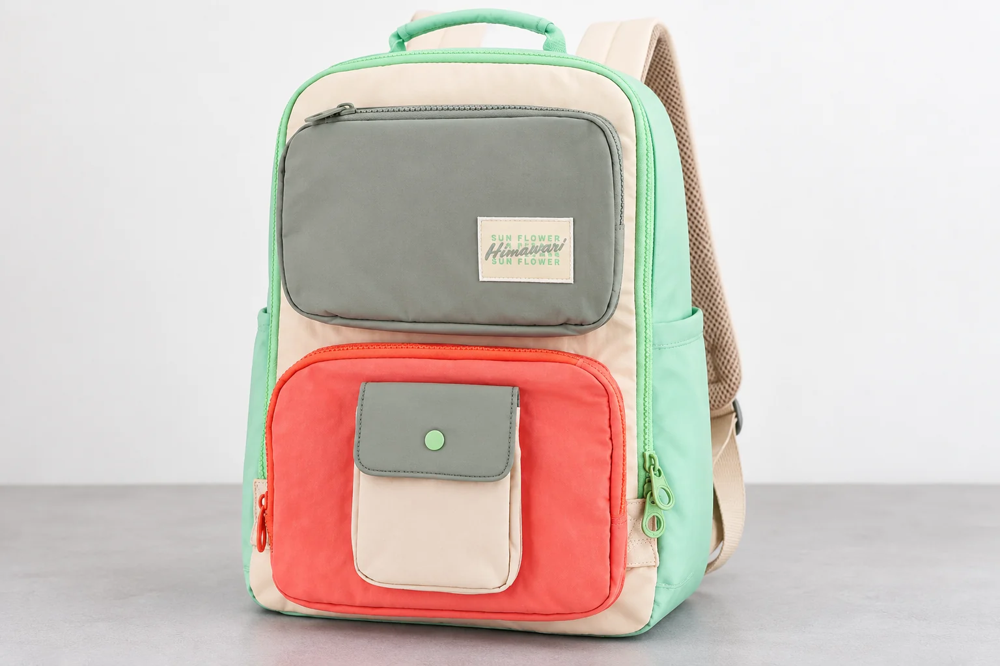

민트아이보리 백팩에는 왜 코랄색도 보일까, 색상 옵션 이름 읽기

민트와 아이보리 두 색이 들어간 백팩을 떠올리고 상품 사진을 열었는데, 앞면 아래에 코랄색 포켓이 크게 보입니다. 이름을 잘못 읽었을까요. 히마와리 No.8029 민트아이보리의 실제 사진에서 만나는 모습입니다. 이름에 적힌 색만으로 가방 전체를 상상하면 사진을 본 뒤에도 어느 옵션을 골라야 하는지 망설일 수 있습니다.
이 가방을 고르는 상황을 생각해봅니다. 살필 문제는 코랄색 포켓이 있는 사진과 민트아이보리라는 이름이 어떻게 같은 구매 항목으로 이어지는가입니다. 코랄색이 옷에 어울리는지를 판단하는 문제와는 구별됩니다. 색 이름을 더 세밀하게 해석하려고 하기보다 실제로 보이는 부분과 상품에 적힌 말을 한 번씩 맞추면 혼동이 줄어듭니다.
두 단어와 실제 앞면을 나란히 놓으면
현재 제품 자료의 상품명에는 No.8029와 민트아이보리가 함께 적혀 있습니다. 그 항목에 연결된 정면 원본을 보면 밝은 아이보리색 몸판 바깥으로 민트색 테두리가 이어집니다. 위쪽 손잡이와 보이는 옆면에도 민트색이 있습니다. 이름의 두 색을 사진에서 찾을 수 있지만 앞면은 여기서 끝나지 않습니다.
위쪽의 넓은 앞 포켓은 회색과 초록색이 섞인 듯한 색으로 보이고, 아래쪽의 큰 포켓은 코랄색입니다. 그 위에는 작은 아이보리색 포켓이 붙어 있으며 회색 덮개와 민트색 둥근 단추가 보입니다. 위 포켓의 작은 직사각형 로고 바탕도 밝은 크림색입니다. 서로 다른 위치를 짚어보면 이름에 없는 색이 장식 한 점에만 쓰인 것도 아니라는 사실을 알 수 있습니다.

여기서 코랄이라는 단어가 없으니 다른 옵션 사진이라고 곧바로 판단하면 안 됩니다. 이 제품 항목에서는 민트아이보리라는 이름과 코랄색 앞 포켓이 있는 원본이 함께 제시되어 있습니다. 적어도 이 이름은 가방에서 보이는 모든 색을 빠짐없이 나열한 목록이 아닙니다.
왜 하필 두 색을 골라 이름을 붙였는지, 코랄색은 어떤 기준으로 생략했는지는 공개된 제품 자료에 설명되어 있지 않습니다. 이름을 만든 의도까지 추정할 필요는 없습니다. 이름에 없는 색이 보인다는 관찰만으로도 두 색만 있는 가방을 기대해도 되는지 답할 수 있습니다. 코랄색을 원하지 않는다면 이 사진의 배색은 자신의 조건에 맞지 않습니다.
민트가 앞에 적혀도 면적 순서는 알 수 없습니다
민트아이보리를 읽고 첫 단어가 몸판색, 뒤의 단어가 포켓색이라고 정해 보면 실제 앞면과 맞지 않습니다. 사진에서는 아이보리색 몸판에 민트색 테두리가 둘러져 있고, 넓은 앞 포켓 두 곳에는 다른 색이 놓여 있습니다. 이름의 순서만으로 어느 부위가 무슨 색인지 그릴 수 없는 셈입니다. 민트가 먼저라는 이유로 민트색 면적이 가장 넓다고 계산할 근거도 없습니다.
이 사진 하나만으로 새 규칙을 만들 수도 없습니다. 앞 단어는 테두리색이고 뒤 단어는 몸판색이라는 식의 규칙입니다. 지금 확인한 것은 No.8029 민트아이보리 항목 한 개의 이름과 앞면입니다. 다른 모델이나 다른 판매 항목의 색 배치를 같은 순서로 읽으려면 그 자료를 다시 보아야 합니다. 색 이름의 순서와 부위를 연결하는 공통 규칙은 현재 자료에서 확인되지 않습니다.
민트아이보리와 아이보리민트를 같은 말이라고 바꾸어 적는 것도 피하는 편이 좋습니다. 판매처가 별도 항목으로 쓰는지 모르는 이름을 스스로 만들면 나중에 상품을 다시 찾을 때 검색어와 선택 항목이 어긋날 수 있습니다. 순서가 뒤집힌 이름을 발견해도 색 배치까지 반드시 반대라고 기대할 수는 없습니다. 두 이름이 같은 배색인지 다른 배색인지는 각각 연결된 실제 사진으로 확인할 문제입니다.
이름이 비슷한 다른 항목을 볼 때도 몸판과 앞 포켓을 따로 대조하면 됩니다. 같은 민트라는 말이 들어 있어도 민트색이 놓이는 자리가 같다는 보장은 없습니다. 처음 사진에서 눈여겨본 코랄색 아래 포켓까지 같은지 살펴야 원하는 배색을 따라갈 수 있습니다. 이름의 단어 몇 개가 겹친다는 이유로 사진을 건너뛰면 정작 마음에 든 부분을 놓치기 쉽습니다.

확대해서 살필 때에는 색을 새로 이름 붙이는 데 힘을 쓰지 않아도 됩니다. 위쪽은 회색빛 포켓, 아래쪽은 코랄색 포켓, 가운데에는 작은 밝은 포켓처럼 위치를 붙여 읽으면 충분합니다. 이 표현들은 원본에서 각 부분을 찾기 위한 설명입니다. 판매처의 정식 옵션명을 고치거나 새 색상표를 만드는 말은 아닙니다.
선택창에 남길 것은 사진과 연결된 이름입니다
이제 이 백팩을 후보로 남긴다고 생각해봅니다. 상품명은 No.8029 민트아이보리 그대로 적고 그 항목의 실제 정면 사진을 함께 둡니다. 옆에는 아이보리 몸판, 민트 테두리, 코랄색 아래 앞 포켓처럼 자신이 대조할 부위만 짧게 적습니다. 옵션 이름은 다시 찾을 때 쓸 표기로, 부위 메모는 사진을 확인할 때 쓸 설명으로 남습니다. 둘을 섞어 민트코랄 같은 새 옵션명을 만들지 않습니다.
상품 페이지를 다시 열었을 때는 처음 본 큰 대표 사진이 계속 남아 있는지보다 현재 선택한 항목이 무엇인지 봅니다. 여러 배색을 보여주는 화면이라면 사진을 넘긴 것과 주문 옵션을 바꾼 것이 같은 동작인지 확인합니다. 마음에 든 사진을 열어 놓았어도 선택창에는 다른 이름이 남아 있을 수 있기 때문입니다. 사진 아래에 붙은 표기와 선택된 이름을 연결할 수 있어야 주문할 배색이 정해집니다.
외부 크기인 가로 27 × 세로 39 × 폭 14cm는 이 모델을 확인하는 보조 정보입니다. 두 사진에 같은 치수가 적혀 있어도 색상 옵션은 서로 다를 수 있습니다. 모델 번호가 맞고 크기도 같더라도 배색은 따로 대조합니다. 반대로 코랄색 포켓이 비슷해 보인다는 이유만으로 다른 모델을 No.8029와 같은 가방이라고 판단하지 않습니다.
선택 항목과 사진의 연결이 끝내 불분명할 때만 그 부분을 문의하면 됩니다. No.8029 민트아이보리를 선택하면 코랄색 아래 앞 포켓이 있는 정면 사진의 배색을 받는지 묻고 해당 사진을 함께 지정합니다. 모든 색의 정식 명칭이나 이름 붙인 이유를 물을 필요는 없습니다. 구매를 결정하는 데 남은 의문은 그 사진과 선택 항목이 같은 제품을 가리키는지입니다.
이 글의 AI 연출 사진은 배색이 놓인 부위를 살펴보는 참고 장면입니다. 주문 항목을 확정할 때에는 실제 제품 원본과 현재 판매 표기로 돌아옵니다. 민트아이보리라는 이름을 기억하면서 코랄색 포켓도 함께 기억하면 이름에 없는 색을 뒤늦게 보고 다른 옵션일까 추측할 필요가 없습니다. 두 색 단어를 읽으며 고르려던 물건은 그 사진에 보이는 백팩 한 개입니다.